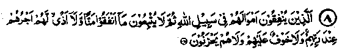

Chapter One · Section (a): Ayaat on the virtues of spending for the cause of Allah
2. On the interpretations of ‘Mann’ and ‘Azaa’

8. Those who spend their wealth for the cause of Allah ' and afterwards make no reproach or injury (in any way) to follow that which they have spent, their reward is with their Lord, and there shall no fear come upon them, neither shall they grieve. (On the Day of Judgement). (al-Baqarah: 262)
Note: This great Ayat follows the previous one, and the whole section (Ruku‘) deals with the same subject. It encourages us to spend for the cause of Allah and warns against boasting of the favour-done or teasing the beneficiary with taunts and insults, which means treating him with contempt, or to look down upon him. Rasulullah Sallallaho alaihe wasallam has said that certain people shall not enter ‘ Jannah’. These include one who boasts of his generosity after spending for the cause of Allah, the other who is disobedient to his parents and the third who is a habitual drunkard, etc. (Durre Manthur). Imaam Ghazali Rahmatullah alaihe has written in the ‘Ihya’ about the etiquettes of Sadaqah that it must not be destroyed by ‘Mann’ (reproach) and ‘Azaa’ (injury). Some Ulama have explained ‘Mann’ as boasting about it to the person to whom the Sadaqah has been given and ‘Azaa’ as talking about it to others. Other Ulama have said that ‘Mann’ is to demand free labour in return for Sadaqah and ‘Azaa’ is taunting the beneficiary for begging. Some others have said that ‘Mann’ is to show a feeling of superiority over the receiver of alms, and ‘Azaa’ is to rebuke the poor for begging. Imaam Ghazali Rahmatullah alaihe has said that ‘Mann’ is as follows:-
Having spent the money on the poor man, one would be conscious of it as a favour shown to him. This very thought becomes the source of all the evils mentioned above. In reality it is the poor who does favour to the rich, as their acceptance of Sadaqah absolves the rich of their obligation to Allah Ta‘ala and also because the poor become a source of purification of the rich man’s wealth, besides saving him from the fire of ‘Jahannam’ to which he was destined, if the Zakaat had remained unpaid. (Ihya). The famous Mohaddith Imaam Sha‘abi Rahmatullah alaihe has said that unless a rich person considers himself more in need of reward from Allah for his Sadaqah than he thinks the poor person to be in need of his Sadaqah, he has wasted his alms, which would be thrown back on him-(Ihya-ul-Uloom). The Day of Judgement shall be a day of great severity, sorrow and terror, as would be explained at the end of this book. To be safe from these calamities on that day would be a great privilege.